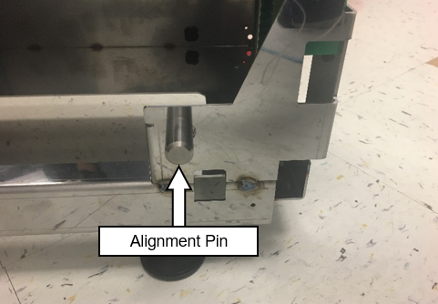
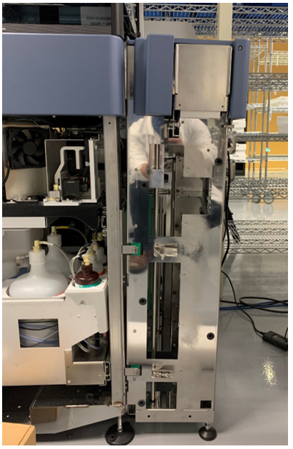
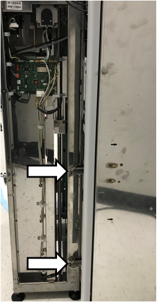
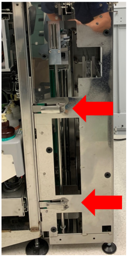

MTU Sidecar Installation
Procedure
- Close and lock the Service Drawer.
 Install the MTU Multi-tube unit—Container used to process tests in the instrument. An MTU contains five separate reaction tubes. The MTU is moved through the instrument by the linear distributor and includes five tiplets for pipettiing to be used in the mag wash station. Expansion Guide Plate.
Install the MTU Multi-tube unit—Container used to process tests in the instrument. An MTU contains five separate reaction tubes. The MTU is moved through the instrument by the linear distributor and includes five tiplets for pipettiing to be used in the mag wash station. Expansion Guide Plate.
- Align the MTU Expansion Guide Plate to the MTU Queue
- Prepare the MTU Sidecar for mating to the Panther.
- Move the sidecar away from the system and loosely install the front Alignment Pin on the MTU Sidecar as shown below.

Warning—DO NOT LOOSEN THE TWO ALIGNMENT PINS AT THE
REAR OF THE MTU SIDECAR
- Slide the MTU Sidecar towards the system so that the front and top rear alignment pins mate with the alignment slots on the guide plate.
- Adjust the outside feet to ensure the top of the MTU Sidecar is slightly tilted out from the right side of the Panther

- Adjust the feet as needed so that the lower pin slides into the rear into the slot with minimal force.
Warning— DO NOT LOOSEN THE REAR MTU SIDECAR PINS. 
Note— Lowering both back feet will rotate the MTU sidecar clockwise when looking at it from the right side of the system. Raising both back feet will rotate the MTU sidecar counter clockwise when looking at it from the right side of the system. Note— Lowering both front feet will rotate the MTU sidecar counter clockwise when looking at it from the right side of the system. Raising both front feet will rotate the MTU sidecar clockwise when looking at it from the right side of the system. - Tighten the Front Pin.
Note—The front alignment pin can be moved into position from the inside of the MTU Sidecar. - Remove the sidecar and re-install. The Sidecar should slide in with minimal force. If not adjust feet as needed.
- Push the top of the sidecar towards the system.
Close all latches and adjust the outside feet so that they are just touching the ground.

- Verify alignment in Y-Direction of scissor.
 button at the top of the page to send feedback, comments, or change requests.
button at the top of the page to send feedback, comments, or change requests.